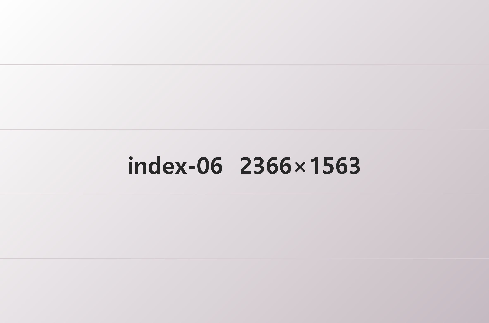

ONSAE Dental Clinic
있는 그대로
오래 지켜 주는 온새치과
내 치아로 씹는 하루가 가장 편합니다.
온새치과는 뽑기 전에 살릴 수 있는 방법부터 먼저 찾고,
살릴 수 없을 때에만 임플란트와 보철을 권하는 순서로 차근차근 진료합니다.
진료가 끝난 뒤에도 집에서 치아를 지킬 수 있도록 칫솔질과 관리법을
진료실에서 직접 보여 드리고, 6개월마다 검진 날짜를 먼저 알려 드립니다.
오래 쓰는 내 치아, 그 시작을 온새치과에서 함께하세요.

Keep your teeth
Keep your smile
ONSAE Department
잇몸 건강부터 미소까지
온새치과 진료분야
치과 진료, 미루고 계신가요?
온새치과는 검사 결과를 먼저 보여 드리고, 치료 순서와 비용을 같이 정합니다.
Team Of ONSAE Dental Clinic
오래 쓰는 치아를 먼저 생각하는
의료진 Team ONSAE
첫 진료부터 같은 설명으로.
Team ONSAE는 상담부터 마무리 진료까지 같은 원장이,
같은 기록을 보고 이어서 진료하도록 준비합니다.
검사 사진을 화면에 띄워 직접 보시게 하고, 마음 편히
물어보실 수 있는 시간을 따로 둡니다.
디지털 장비와 전문의가 함께 진료하는 온새치과에서,
잇몸 건강과 자연스러운 미소, 둘 다 놓치지 않는 진료를 하겠습니다.
Keep your teeth Keep your smile
Keep your teeth Keep your smile
Keep your teeth Keep your smile
Keep your teeth Keep your smile
Why ONSAE Dental Clinic?
왜 다들 온새치과를
다시 찾을까요?
ONSAE Equipment
정확하게 보려고
온새치과가 갖춘 장비
찍은 영상을 진료실 화면에서 바로 함께 봅니다.
검사 결과를 보시면서 치료를 같이 결정하실 수 있습니다.
ONSAE Dental
ONSAE Location
조용하고 편안한 진료 공간
온새치과 둘러보기
한 분씩 쓰는 1인 진료실과 밝은 대기 공간!
온새치과는 치료를 기다리는 시간까지 편안하도록 공간을 꾸몄습니다.
ONSAE Media
집에서도 쉽게
챙기는 치아 건강!
온새치과 미디어룸
칫솔질부터 치료 뒤 관리까지, 자주 받는 질문을 영상과 글로 정리했습니다.
오시는 길
역삼역에서 걸어서 2분. 온새치과로 오시는 길과 주차 방법을 안내해 드립니다.
 네이버 지도
네이버 지도010.4894.4905
-
월·목요일
09:30 ~ 20:30 야간진료 연장진료
-
화·수·금
09:30 ~ 18:30
-
토요일
09:30 ~ 16:30
-
점심
13:00 ~ 14:00
*일요일·공휴일은 휴진입니다.
*월·목요일에는 17:30부터 18:00까지 휴게시간이 있습니다.
*점심시간 및 진료 마감 30분 전에는 접수가 마감됩니다.
*월요일과 목요일은 밤 8시 30분까지 진료하니, 퇴근길에 편하게 들러 주세요.